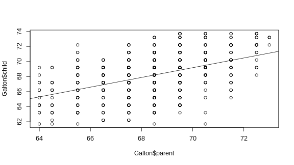

- To generate a linear model using galton's data.
- To build a Shinyapp to Predict a child height based on mom and dad height's.
Cristian Rojas
Galton (1886) presented these data in a table, showing a cross-tabulation of 928 adult children born to 205 fathers and mothers, by their height and their mid-parent’s height. He visually smoothed the bivariate frequency distribution and showed that the contours formed concentric and similar ellipses, thus setting the stage for correlation, regression and the bivariate normal distribution.
The code below was used to generate the linear model that is used for the prediction, also we can see the plot corresponding to this linear model.
library(HistData)
data(Galton)
galton_model <- lm(child ~ parent, data=(Galton))

Imagine this escenario: The dad's height is 70" and the mom's height 64". Which is the predicted son's height?
You can access to our shinyapp on this URL https://carojasq.shinyapps.io/DevData
The right answer is 67.243.